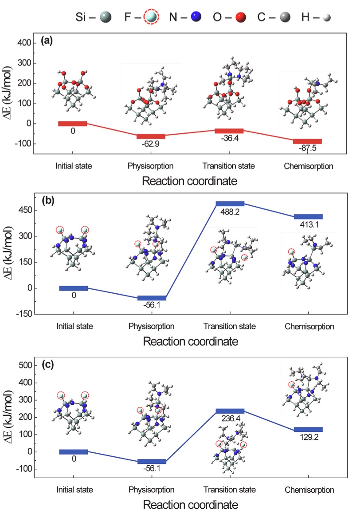
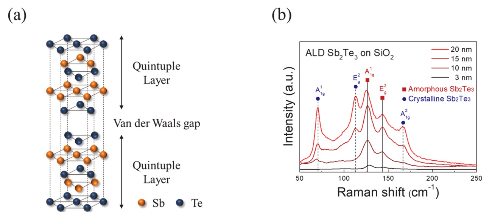
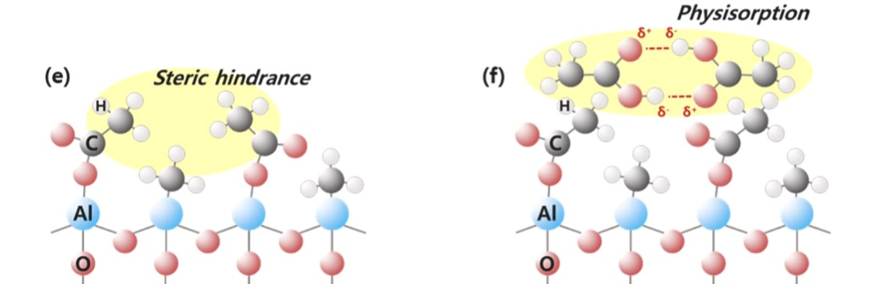
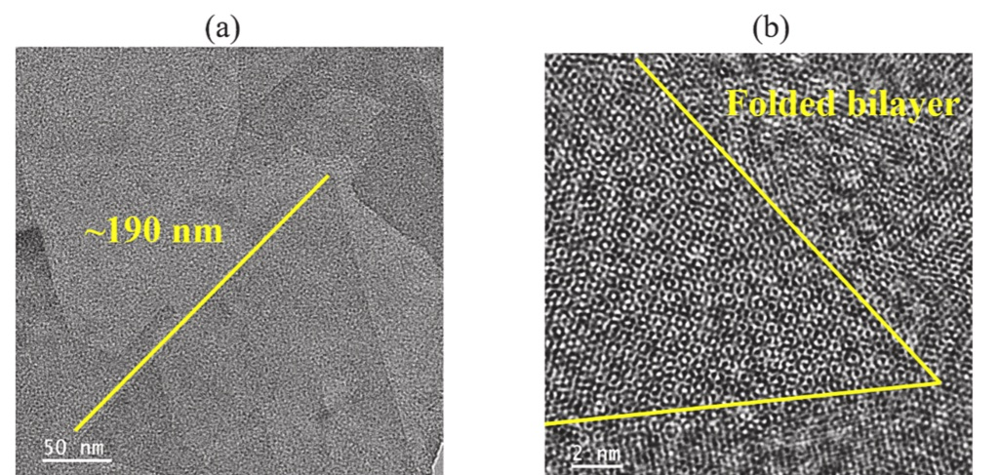
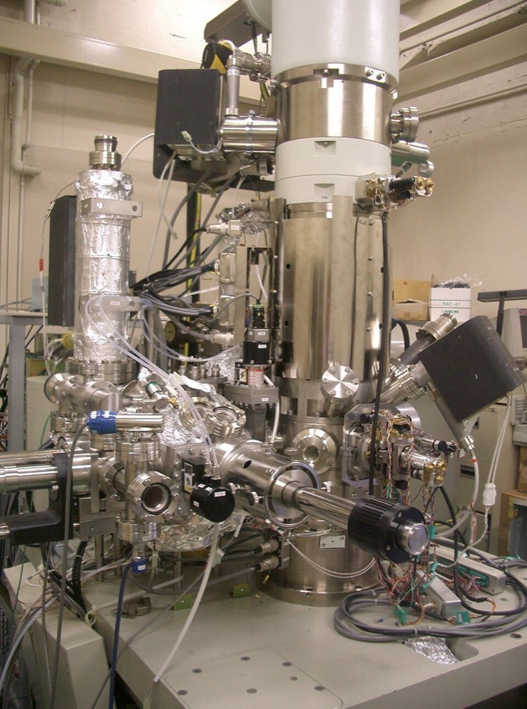
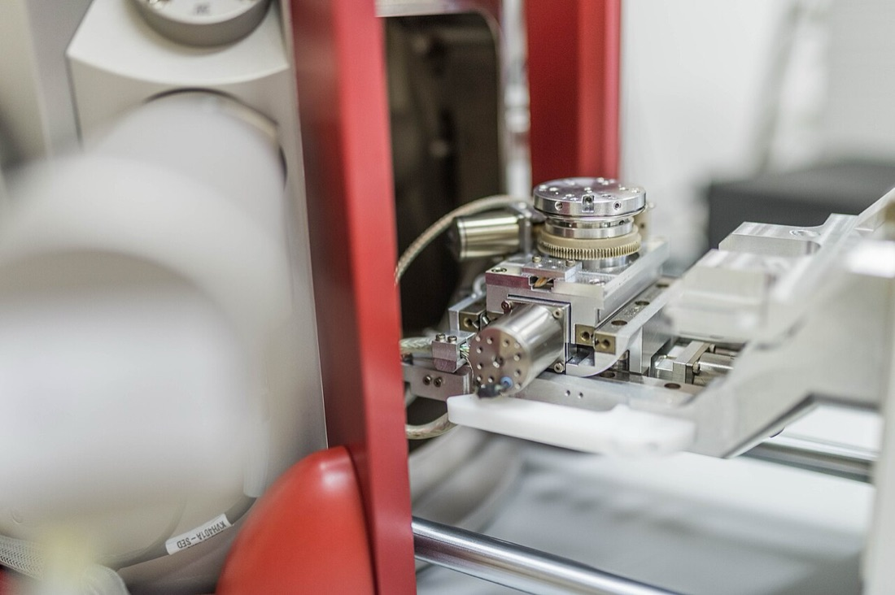

정승민 교수Seung-min Chung, Ph.D.
호서대학교 AI공과대학 반도체공학과 부교수
원자층 증착(ALD)으로 차세대 반도체의 박막과 계면을 원자 단위로 설계합니다. 영역선택적 SiO₂ 증착, 3D 크로스포인트 메모리 전극·선택소자, 초저유전 비정질 BN, 2D 반도체 트랜지스터 계면 제어까지, 소재 합성에서 소자 검증까지 잇는 연구를 수행합니다.
ISM Lab은 원자층 증착(ALD)을 중심으로 차세대 반도체의 박막과 계면을 연구합니다. 아래는 2023–2026년 발표 논문을 바탕으로 정리한 다섯 가지 연구 주제와 대표 결과입니다. 그림을 누르면 크게 볼 수 있습니다.
영역선택적 증착(ASD)은 패터닝 공정을 줄이는 차세대 핵심 기술입니다. 우리는 SiO₂와 SiNₓ가 HF 처리 후 서로 다른 표면을 갖게 되는 이유를 밀도범함수이론(DFT) 계산과 XPS로 규명했습니다. SiNₓ는 식각 과정에서 표면에 SiF₂ 종이 쌓여 Si 전구체의 화학흡착을 억제하고, SiO₂는 수산기로 끝나 증착이 일어납니다. 이 원리를 이용해 HF 농도만 조절해도 증착 선택비를 높일 수 있음을 보였습니다.
NH₃ 플라즈마로 SiNₓ 표면을 Si–NH 결합으로 바꿔 선택비를 높이고, 증착 중 층마다 플라즈마 처리를 더해 선택성을 잃지 않으면서 SiO₂ 막을 치밀하게 만들었습니다. 3D NAND 터널 산화막을 겨냥한 TKDMAS·오존 함유 산화제 고온 ALD로는 700 °C에서도 자기제한 성장(2.9 Å/cycle)을 유지하고, 종횡비 24의 트렌치에서 91–93%의 단차피복을 얻었고, −1 MV/cm에서 최소 누설전류밀도 4.5×10⁻⁹ A/cm²를 확인했습니다. 이 밖에 열안정성을 높인 신규 Zr 전구체 ZrO₂, 자기정렬 이중 패터닝(SADP) 스페이서용 주석 실리콘 산화물도 연구합니다.

3D 크로스포인트 메모리는 셀마다 선택소자(OTS)와 전극을 수직으로 쌓아야 하므로, 복잡한 구조에도 균일하게 덮이는 ALD 공정이 유리합니다. 우리는 Ge-Se와 Ge-S 초주기(super-cycle) ALD로 Ge-S-Se 3원계 합금의 조성을 폭넓게 조절해 off 전류를 약 35 nA까지 낮췄습니다.
OTS 상부 전극으로 ALD 텅스텐 카보나이트라이드(WCₓNᵧ)를 개발해, 증착 온도(240–270 °C)만으로 비저항과 문턱전압을 조절했습니다. 소자는 10³ 이상의 선택비, 100 nA 미만의 off 전류, 85 °C 동작과 10⁷회 이상의 스위칭 내구성을 보였습니다. 상변화 소재 Sb₂Te₃는 SiO₂ 위에서는 비정질로 시작해 10 nm 이후 다결정으로, W 위에서는 처음부터 층상 구조로 자란다는 사실을 나노 수준에서 밝혔습니다.

MoS₂ 같은 2D 반도체는 실리콘 이후의 채널 소재로 주목받지만, 표면에 산화막을 고르게 올리기 어렵고 금속과의 접촉저항이 큽니다. 우리는 TMA·아세트산·H₂O를 차례로 쓰는 ABC형 ALD로 MoS₂의 산화를 억제하면서 탄소 불순물을 줄인 Al₂O₃ 게이트 절연막을 만들어, on/off 비 10⁷ 이상의 트랜지스터를 구현했습니다.
접촉 문제는 두 방향으로 풉니다. 전구체 주입 압력을 조절해 ALD Al₂O₃ 삽입층의 균일도를 높이면 막 두께를 바꾸지 않고도 접촉저항이 크게 줄어든다는 것을 처음 확인했고, ALD로 반금속 TiS₂를 올린 반데르발스 접합으로 쇼트키 장벽을 8.54 meV까지 낮췄습니다. 웨이퍼 규모 WSe₂ 위에 ALD ZnO를 쌓은 2D–3D 하이브리드 p–n 다이오드도 개발했습니다.

소자 미세화의 걸림돌인 RC 지연을 줄이려면 유전율 2 미만의 안정한 절연막이 필요합니다. 우리는 열 ALD 사이클마다 NH₃ 플라즈마 처리와 진공 이완 단계를 더한 플라즈마 이완 보조 ALD(PRA ALD)로 비정질 BN을 합성했습니다. 막 밀도는 2.17 g/cm³로 높아지면서도 비정질 구조를 유지해 1 MHz에서 유전율 약 1.4를 보였고, 90일 동안 대기에 두어도 두께가 거의 변하지 않았습니다. TEM으로 확인한 결과 고종횡비 트렌치에서도 균일하게 덮였습니다.
또한 ALD B₂O₃ 도펀트 층과 비용융 레이저 어닐링을 결합해, 250–300 mJ/cm² 조건에서 깊이 20 nm 미만의 초박형 p⁺ 접합을 매끈한 표면과 함께 형성했습니다. 이 접합으로 만든 p⁺/n 다이오드는 0.04 V에서 미분 이상계수 1.01·1.03을 보였습니다.

2D 소재 가스센서의 고질적 문제인 느린 회복을 해결하기 위해, ALD Al₂O₃가 MoS₂·WS₂의 결함과 결정립계에만 선택적으로 자라도록 해 결함을 막았습니다. 그 결과 상온에서 10 ppm NO₂에 400% 반응하면서 회복률이 74%에서 96%로 올랐습니다. 센서 데이터를 머신러닝으로 분석해, NO₂·NH₃와 그 혼합가스를 2단계 분류 모델로 90% 이상, 별도의 잡음 제거 오토인코더(SDAE) 모델로는 잡음 환경에서도 95% 이상 정확하게 구분했습니다.
에너지 분야에서는 흑연 위에 수직으로 자란 ALD MoS₂ 나노시트에 ALD Pt를 입혀 수소발생 촉매 성능을 높였고, ALD RuO₂의 결정성과 두께를 조절해 산소발생 촉매를 최적화했습니다. 밴드갭을 0.52–1.39 eV로 조절한 RuS₂ₓSe₂₋₂ₓ 근적외선 광검출기도 개발했습니다. 최근에는 유한요소해석(FEA)으로 열응력 저감 효과를 평가한 유리기판 관통 비아(TGV)용 ALD SiO₂ 패시베이션과 PCB 초미세 홀 가공으로 첨단 패키징 연구를 넓히고 있습니다.

ISM Lab은 투과전자현미경(TEM)과 집속이온빔-주사전자현미경(FIB-SEM)을 직접 관리하며, 시료 가공부터 구조·조성 분석까지 연구실 안에서 자체적으로 진행합니다. 덕분에 박막과 계면 연구의 결과를 빠르게 확인하고 다음 공정에 바로 반영할 수 있습니다.

원자층 증착 박막의 단면과 계면, 결정 구조를 고분해능으로 관찰하고, EDS로 원소 조성과 분포를 분석합니다.

원하는 위치의 단면을 정밀하게 가공해 관찰하고, 미세조작기로 TEM 분석용 시료를 직접 제작합니다.
도호쿠대학교에서 구리 배선용 자가형성 배리어 연구로 박사학위를 받고, 하버드대학교에서 CVD 기반 차세대 배선 기술을 연구했습니다. 이후 삼성전자와 원익머트리얼즈에서 DRAM·로직 공정과 전구체를 개발했고, 연세대학교에서 ALD 소재 국책과제를 이끌었습니다. 지금은 호서대학교에서 ISM Lab을 운영하고 있습니다.
폭 20 nm 미만, 종횡비 7:1 이상의 미세 트렌치를 Cu-Mn 합금 CVD로 채우고, MnN 배리어·접착층과 Mn 자가형성 배리어로 Cu/절연막 계면을 강화하는 차세대 구리 배선 공정을 연구했습니다. 태양전지용 CVD 구리 배선과 MnO 패시베이션도 함께 개발했습니다.
Cu-Mn 합금 자가형성 배리어의 구조·전기적 특성과 저유전(SiOC) 배선 신뢰성 연구.
DRAM 커패시터용 High-k(ZAZ) 열 ALD, PEALD SiN 원격 플라즈마 시스템, PECVD 초저유전(SiOC) 공정 개발.
ASD용 Ru, 로직용 Co·TiN, High-k(ZrOx·HfOx), SiO₂ 전구체의 ALD/CVD 공정 평가와 개발.
소재부품장비 혁신LAB·소재부품기술개발 국책과제 실무 총괄, 2D 가스센서 전자코 창의도전과제 책임. 삼성전자·SK하이닉스 등과 산학과제 수행.
Intelligent Semiconductor Materials LAB을 이끌며 ALD 박막·2D 소재·첨단 패키징 공정을 연구합니다. 차세대디스플레이 혁신융합사업단 부센터장을 맡고 있으며, 중기부 R&D 과제의 연구책임자로 PCB 초미세 홀 가공·검사 장비를 개발하고 있습니다. TEM과 FIB-SEM을 직접 관리하며 자체 분석을 수행합니다.
2025–2026년 교신저자로 발표한 논문 가운데 일부입니다.
HF 처리 후 SiO₂와 SiNₓ 표면의 화학적 차이를 밝혀 영역선택적 SiO₂ ALD에 활용
3D 크로스포인트 메모리 전극용 ALD WCN의 비저항 제어
대기 안정성을 높인 초저유전 비정질 BN 박막
PCB 초미세 홀 드릴링 공정과 비전 기반 결함검사 기술을 개발합니다.
디스플레이 분야 혁신융합 교육과 Tohoku University 연계 프로그램을 운영합니다.
참여교수로 OLED 분야 전문 인력 양성 사업에 참여하고 있습니다.
국제 학술지 논문 32편 · 교신저자 25편
 정승민 Seung-min Chung, Ph.D.호서대학교 AI공과대학 반도체공학과 부교수
정승민 Seung-min Chung, Ph.D.호서대학교 AI공과대학 반도체공학과 부교수반도체 공정, 전자 패키징, 전자세라믹·소자, 재료과학
ISM Lab에서 함께 연구한 사람들입니다. 졸업생은 학위와 졸업 연도, 학위논문, 현재 진로 순으로 소개합니다.
학회 발표, 연구실 행사, 실험 현장의 순간을 모았습니다.